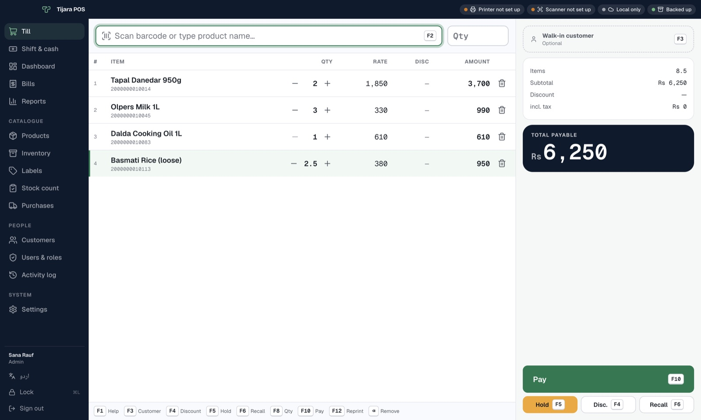
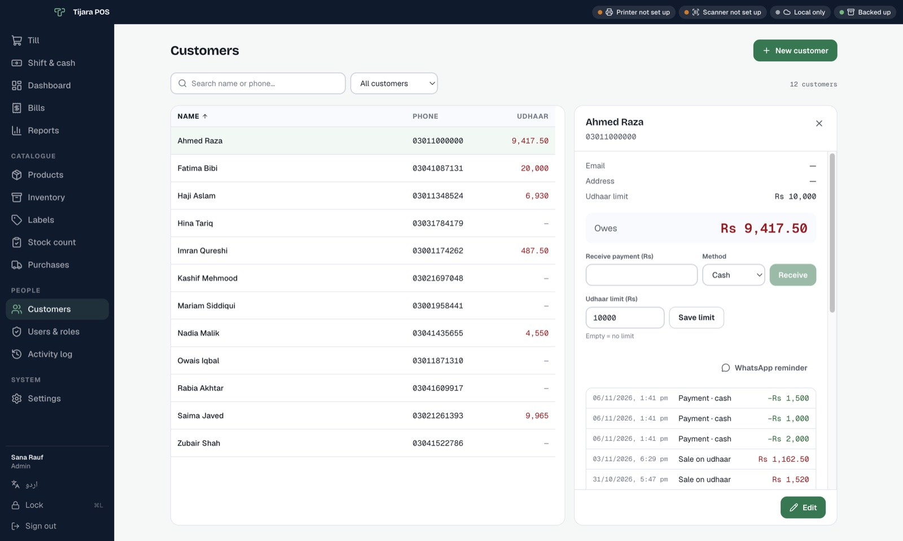
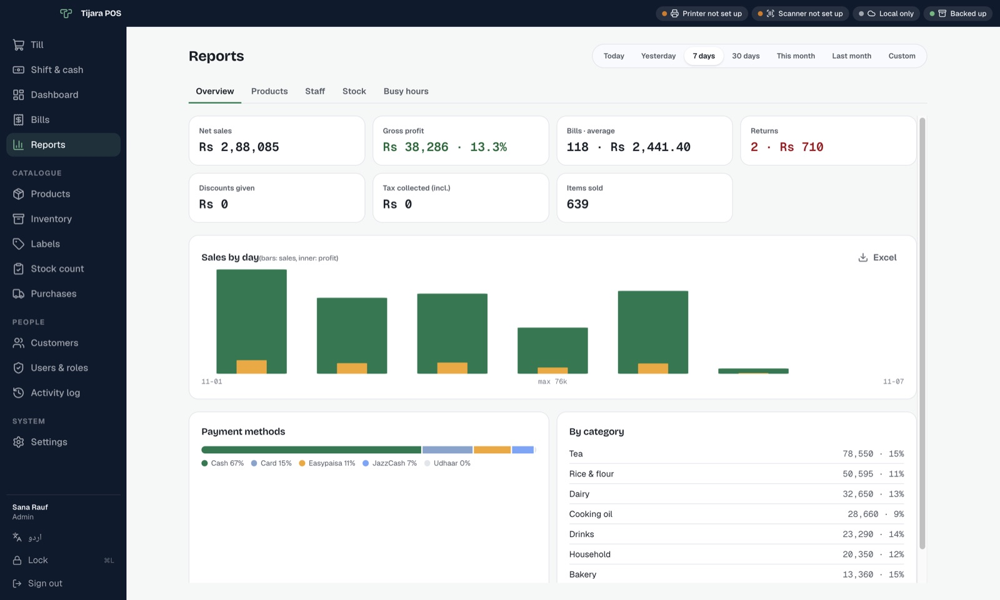

Free trial
14 days
- Every feature unlocked
- Use your real products and sales
- Keep all data when you buy
Point of sale for shops in Pakistan تیز بلنگ، صاف حساب
Scan, enter the quantity, press F10. The bill prints, stock updates and the day's cash adds up. It keeps working when the internet doesn't.
14 days free, every feature. Windows, Mac and Linux.

Choose your shop type on first launch. Tijara turns on what you need and hides the rest.
From the counter to the back office, in one app that doesn't need a server.
Credit limits per customer, payments that go straight into the cash drawer, and a WhatsApp reminder in one click. Every balance matches the bills behind it.

Sales and profit by day, product, category and cashier. Busy hours, best and slow sellers. Export any report to Excel.

A barcode scanner types like a keyboard, so a whole bill is scan, Enter, scan, Enter, then F10. Your hands never leave the keys.
| F2 | Back to the scan box |
|---|---|
| F3 | Attach a customer for udhaar or history |
| F4 | Discount a line; over your limit asks a manager |
| F5 F6 | Hold a bill, serve the next customer, recall it |
| F7 | Return or exchange against a printed bill |
| F8 F9 | Change quantity or price |
| F10 | Pay by cash, card, JazzCash, Easypaisa, Raast or udhaar |
| F12 | Reprint the last receipt |
Every feature free for 14 days, no card needed. A one-time licence keeps it running after.
First time? Windows and Mac show a one-time warning. See how to open it All versions
Tijara POS is not yet verified by Microsoft or Apple, so the first launch shows a warning. It is a one-time step; after that it opens normally and updates itself.
Tijara-POS-…-win-x64.exe, in your Downloads folder.Microsoft Defender SmartScreen prevented an unrecognised app from starting. Running this app might put your PC at risk.
More info
If your antivirus holds the file back, choose Allow or Restore. New versions then install themselves when you close the app.
.dmg you downloaded and drag the app onto the Applications folder.Apple could not verify “Tijara POS” is free of malware that may harm your Mac or compromise your privacy.
After dragging it to Applications, run this once, then open the app:
xattr -dr com.apple.quarantine "/Applications/Tijara POS.app".deb and click Install, or run sudo apt install ./Tijara-POS-*-linux-amd64.deb..AppImage from the release page, run chmod +x Tijara-POS-*.AppImage, then open it..deb is updated by installing the new one.Try it with your real products. When you buy, your data stays exactly where it is.
14 days
One-time
Something else? Get in touch.
No. Billing, stock, reports and USB backups all work offline. Internet is only used for updates and optional extras: email or Google Drive backups and FBR invoices.
On your own computer, in a database that ships with the app. Uninstalling keeps your data, and backups run automatically.
Yes. One PC holds the shop data and the other tills connect to it over the shop network. They share products, stock, customers and bill numbers.
Any USB barcode scanner works. Most 58 and 80 mm thermal receipt printers work through their normal driver or directly over USB or the network, along with the cash drawer plugged into them.
Receipts can print product names in اردو. Urdu screens for the till are coming in a later update; the app is in English for now.
On Windows and Linux the app downloads new versions in the background and installs them when you close it. Updates never touch your shop data.
Licence, pricing or setup help. Write to us and we'll get back to you.